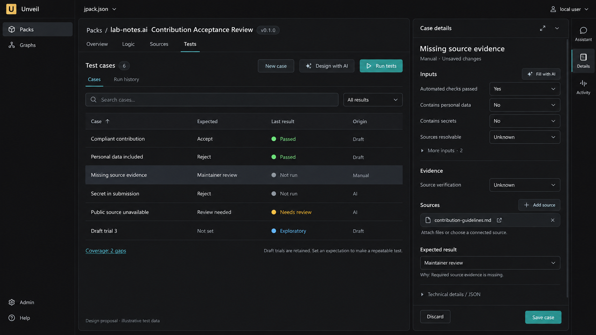
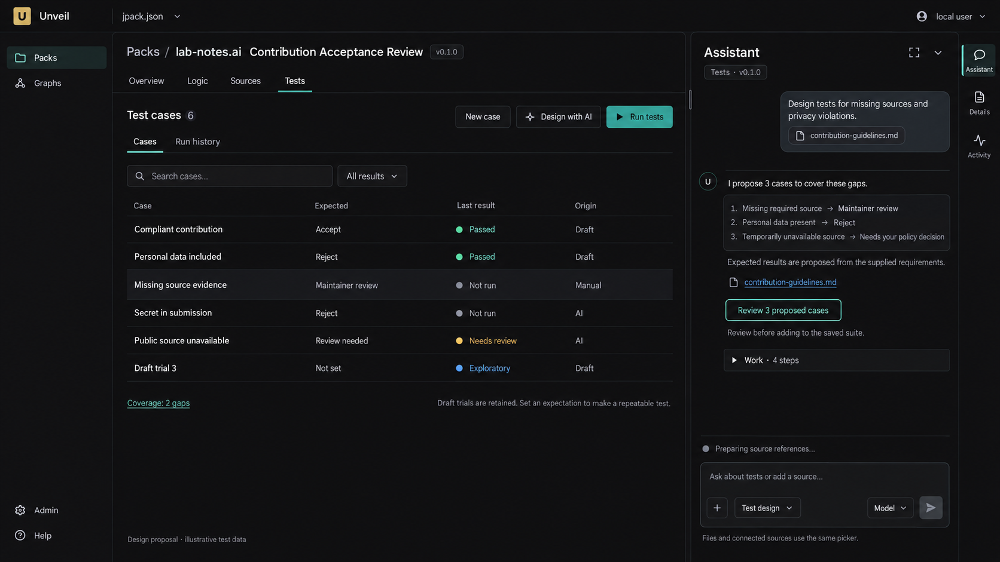

Pack Tests workspace
Static design review · illustrative test data · no application changes
Case editor — manual input, AI assistance and shared sources
Open full-size image

AI test design — Assistant uses the same workspace
Open full-size image
